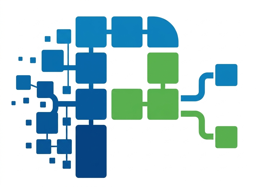
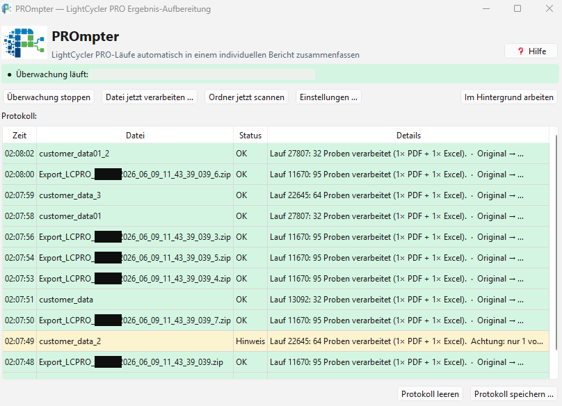
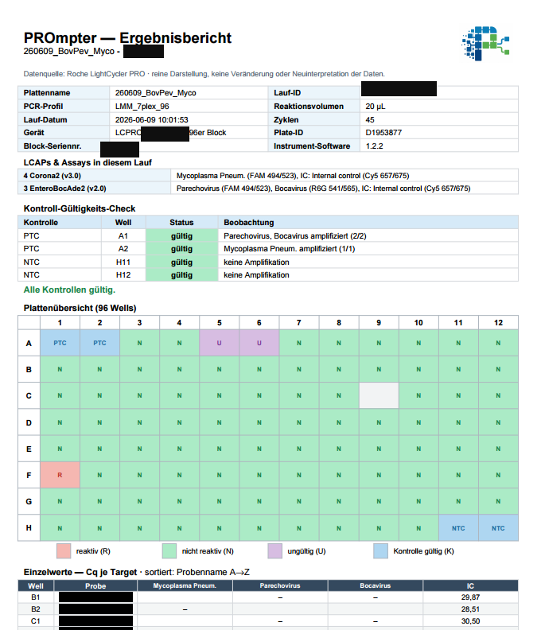

Individuelle Ergebnis-Berichte für den Roche LightCycler PRO
Custom result reports for the Roche LightCycler PRO
Ein kostenloses, vollständig offline laufendes Windows-Werkzeug — aus den Exporten automatisch PDF-Berichte oder Excel erstellen.
A free Windows tool that runs fully offline — turning the exports into PDF reports or Excel automatically.
⬇ PROmpter herunterladen⬇ Download PROmpter
Pro Lauf automatisch — Kopfdaten, Kontroll-Gültigkeits-Check, Plattenübersicht und die Cq-Werte je Target.
Automatically for every run — header data, control validity check, plate overview and the Cq values per target.

Ausführliche Anleitung als PDF:
Detailed instructions as a PDF:
Windows zeigt beim ersten Mal evtl. „Der Computer wurde durch Windows geschützt":
Normal (App neu & unsigniert), erscheint nur einmal.
The first time, Windows may show “Windows protected your PC”:
Normal (the app is new & unsigned), appears only once.
Weitergabe ist explizit erwünscht!
Sharing is explicitly encouraged!
PROmpter ist ein reines Darstellungs-/Report-Werkzeug. Alle Werte (Cq, finalCall, Kurven) stammen unverändert vom LightCycler PRO. PROmpter rechnet nichts neu und interpretiert nichts um — es fasst die geräte-eigenen Ergebnisse nur übersichtlich zusammen. Die Berichte sind eine Zwischenauswertung; die fachliche Freigabe erfolgt weiterhin manuell.
PROmpter is purely a presentation and reporting tool. All values (Cq, finalCall, curves) come unchanged from the LightCycler PRO. PROmpter does not recalculate anything and does not reinterpret anything — it only lays out the instrument's own results clearly. The reports are an interim evaluation; the professional sign-off is still done manually.